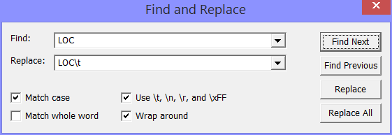

You reach the Find and Replace Dialog
Enter the string you want to find in the 'Find' edit box and click the 'Find Next' Button to find the next occurence of the string in the text; click the 'Find Previous' Button to search backwards for a previous occurence of the search string.
You can repeat the last search operation using 'Find Again' or simply by typing Ctrl-G.
To replace a string, enter a replacement text in the 'Replace' edit box; then click the 'Find' Butten one or more times to move the selection in the editor to an occurrence of the find string; and finally press the 'Replace' Button. Pressing the 'Replace' Button will replace the selected occurrence of the find string and automatically advance the selection to the next occurrence of the find string. This is the interactive mode of replacing. If you click the 'Replace All' button, all occurrences of the find string will be replaced immediately.
Instead of clicking the 'Replace' Button, you can use the 'Replace Again' entry in the Edit menu or simply type Ctrl-H.
If this box is checked, the assembler will produce a listing file. The name of the listing file is the name of the source file with the extension '.mms' replaced by '.mml'.
If this box is checked, the search will find an occurence of the find string only, if it delimited in the text by non-word characters. Non-word characters are all characters, except alpha-numeric characters, the underscore character and characters with ASCII codes above 0x7F (these are considered characters of foreign alphabets).
If you check this box, the backslash character '\' is used as an escape character. But why do you need an escape character?
Non printing characters are difficult or impossible to enter as part of a search or replacement string. For instance you can not type a TAB character in the 'Find' edit box, because when you hit the TAB key, the cursor will just leave the edit box and jump to the next user interface item. To make it possible to enter and see these special characters, the backslash character can be used as an escape character.
When the backslash character is an escape character, you can type
\t for the TAB character (ASCII code 0x08)
\n for the NL (newline) character (ASCII code 0x0A)
\r for the CR (cariage return) character (ASCII code 0x0D)
\xFF where FF are two hexadecimal digits ('0' to '9' and 'A' to 'F' or 'a' to 'f') for the character with the given ASCII code.
\\ for the backslash character itself.
If any other character follows a backslash, the backslash is simply ignored.
If this box is checked, a forward search that reaches the end of the text will start searching at the beginning of the text; similarly, a backward search that reaches the beginning of the text will continue searching from the end of the text.